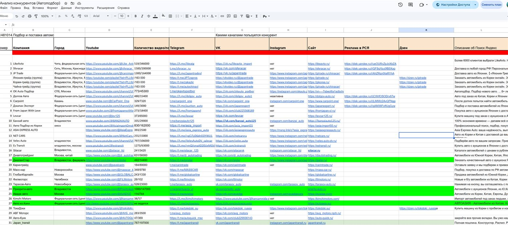
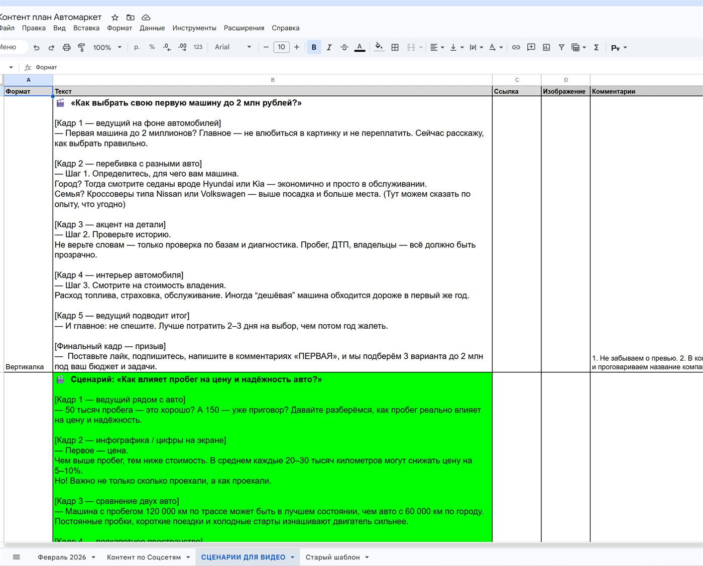
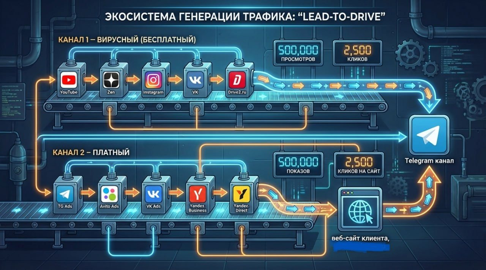
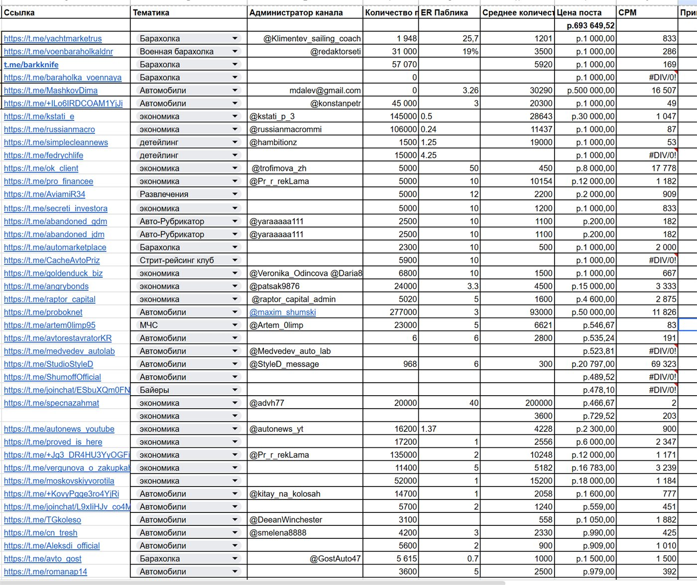
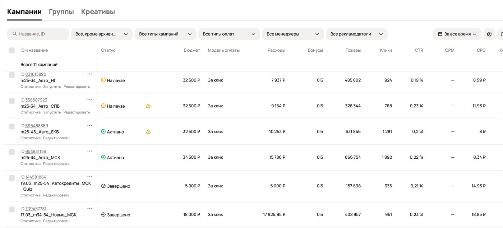

Компания выкупает и пригоняет авто из Азии (Корея, Китай, Япония), работает по всей России, офис — в Москве. Продукт и логистика отлажены, но привлечение клиентов держалось на сарафане и было нестабильным. Запрос: построить понятную систему продаж, которая стабильно приводит заявки. За 3 месяца выстроили «лид-завод», пережили блокировку Telegram за день до запуска и сделали срочный пивот на Авито — 40 квалифицированных лидов за 100 000 ₽. Отдел продаж загрузился так, что клиент сам попросил поставить рекламу на паузу.
С чем пришёл клиент
Автовыкуп — ниша с дорогим и долгим решением. Здесь не работает «купил рекламу — получил клиента завтра». Нужно сначала выстроить доверие через контент, а уже потом докручивать платным трафиком. С этого и начали.
Шаг 1. Анализ 30+ конкурентов: нашли главный канал ниши
Разобрали больше 30 конкурентов по всей России — кто как привлекает клиентов, на чём строит доверие, откуда берёт заявки.
Главный вывод: основной канал продаж в нише — YouTube. Люди перед покупкой авто из Азии смотрят обзоры, разборы цен, видео пригона «под ключ» — и идут к тому, кому доверяют по контенту. Сильные игроки выросли именно на видео, а не на прямой рекламе.

Шаг 2. Медиаплан и обучение контенту
Раз главный канал — YouTube, выстроили работу с ним системно:
- Медиаплан — какие видео снимать, в какой последовательности и с какой регулярностью, чтобы выйти на показатели, близкие к конкурентам.
- Объяснили, как снимать — структура ролика, удержание зрителя, темы, которые реально ищут (обзоры моделей, цены «под ключ», разбор рисков пригона).
- Разобрали алгоритмы YouTube — как площадка продвигает видео, почему важны регулярность, удержание и первые часы после публикации.
- Запустили производство — наладили съёмку видео и написание сопровождающих постов.
Цель этого этапа — не разовый всплеск, а контент-двигатель, который со временем сам приводит аудиторию.

Шаг 3. Лид-завод: собрали систему привлечения
Контент приводит внимание — но внимание нужно превращать в заявки. Для этого построили «лид-завод» — систему, где каждый зритель и подписчик ведётся к контакту:
- Доработали лендинг — усилили оффер, добавили квиз для расчёта и захвата заявки.
- Подготовили посадочные во ВКонтакте и Telegram — единые точки, куда ведёт контент и реклама.
- Связали всё в воронку — контент → посадочная → заявка → отдел продаж.
На выходе — не разрозненные каналы, а единый конвейер: трафик с любого источника попадает в одну отлаженную воронку.

Шаг 4. Готовили посевы и TG Ads — и тут заблокировали Telegram
Следующим шагом планировали платный трафик через Telegram: собрали паблики для посевов (тематические каналы про авто, пригон, автоподбор, экономику и барахолки) и подобрали таргетинги для TG Ads.
И ровно перед запуском Telegram заблокировали в России. Проанализировав падение охватов в TG, приняли решение перестроить стратегию и переключиться на Авито.

Шаг 5. Срочный пивот на Авито — и он сработал
Мы не стали ждать. За счёт того, что лид-завод уже был построен (лендинг с квизом готов, воронка собрана), сменить источник трафика оказалось делом настройки, а не месяцев работы.
Перестроились на Авито Рекламу — это рекламный кабинет Авито (не доска объявлений), трафик с которого вели на лендинг с предустановленным квизом.
| Этап воронки | Значение |
|---|---|
| Бюджет | 100 000 ₽ |
| Показы баннеров | ~1 200 000 |
| Переходы на лендинг | ~3 500 |
| Заявки с квиза | ~140 |
| Квалифицированные лиды | 40 |
| Стоимость квал. лида | 2 500 ₽ |
40 квалифицированных лидов по 2 500 ₽ — для ниши с чеком в сотни тысяч и миллионы рублей это очень дешёвый целевой контакт. Квиз отсеивал случайных и отдавал в продажи людей, реально готовых к пригону авто.

Итог: отдел продаж загружен, реклама на паузе, контент работает сам
Отдел продаж загрузился под завязку — и клиент сам попросил приостановить рекламу, чтобы успеть обработать поток. Это лучшая проблема, которая может быть у бизнеса.
А главное — сработала ставка на контент. Сейчас, уже без активной рекламы, клиенты стабильно приходят через сайт за счёт выстроенного контент-двигателя на YouTube. Лид-завод продолжает работать, а платный трафик можно включать точечно, когда нужно добрать заявок.
| Результат за 3 месяца | Значение |
|---|---|
| Система привлечения | Построен «лид-завод»: контент → посадочные → квиз → продажи |
| Авито Реклама | 40 квал. лидов за 100 000 ₽ (2 500 ₽/лид) |
| Отдел продаж | Загружен полностью — реклама на паузе по просьбе клиента |
| Контент | Приводит клиентов через сайт на постоянной основе, без рекламного бюджета |
Бонус: рекомендации клиенту по развитию
- Не останавливать контент — YouTube даёт накопительный эффект, каждое видео работает месяцами.
- Держать Авито в резерве — включать рекламу, когда отдел продаж готов к новому потоку.
- «Не держать яйца в одной корзине» — растить VK-сообщество как замену заблокированному Telegram, пользоваться всеми доступными соцсетями.
- Докрутить квиз — добавлять вопросы, которые ещё точнее отсеивают нецелевых и повышают долю квалифицированных лидов.